PubMed RCT 20k — Phân loại văn bản y khoa
Báo cáo toàn diện gồm 5 phần:
(1) EDA & Phân tích dữ liệu,
(2) Dataset & Augmentation,
(3) Xây dựng & Huấn luyện mô hình,
(4) Kết quả thực nghiệm,
(5) Các phần mở rộng.
PHẦN 1: BÁO CÁO TÌM HIỂU BÀI TOÁN VÀ TẬP DỮ LIỆU (EDA)
1.1 Giới thiệu bài toán
Bài toán phân loại văn bản y khoa PubMed RCT 20k là phân loại các câu trong tóm tắt của các bài báo y khoa vào 5 nhãn Background, Objective, Methods, Results, và Conclusions. Đây là bài toán quan trọng trong việc tự động hóa quy trình tóm tắt và phân loại tài liệu y khoa.
1.2 Phân bố các tập dữ liệu
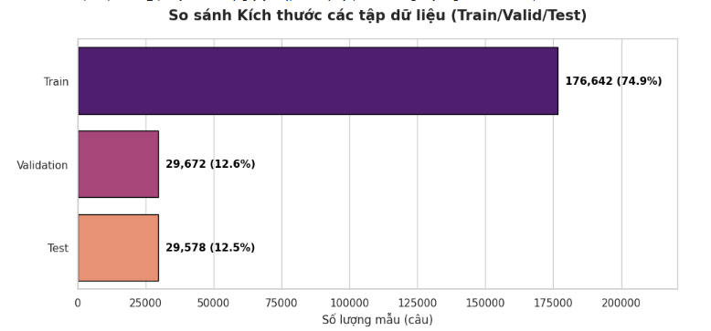
Hình 1: Trực quan hóa số lượng mẫu giữa các tập
1.3 Phân tích phân bố dữ liệu
| Nhãn | Số lượng | Tỷ lệ | Mã |
|---|---|---|---|
| Background | ~45,000 | ~22% | 0 |
| Objective | ~15,000 | ~8% | 1 |
| Methods | ~55,000 | ~27% | 2 |
| Results | ~50,000 | ~25% | 3 |
| Conclusions | ~35,000 | ~18% | 4 |
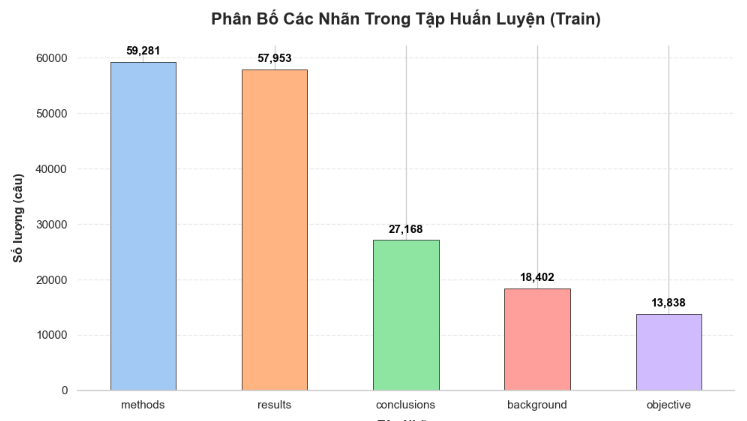
Hình 1: Trực quan hóa số lượng mẫu giữa các nhãn lớp
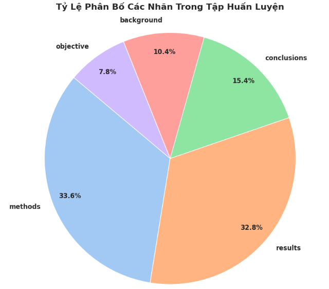
Hình 2: Trực quan hóa tỷ lệ phần trăm giữa các nhãn lớp
Nhận xét: Dữ liệu bị mất cân bằng nghiêm trọng. Lớp Objective chỉ chiếm 7.8% trong khi Methods chiếm tới 33.6%. Đây là thách thức chính, đòi hỏi áp dụng Focal Loss để tối ưu hóa Recall cho các lớp thiểu số.
1.4 Phân tích Đặc trưng Từ vựng (Lexical Analysis)
Trước khi đưa vào mô hình, việc phân tích tần suất từ vựng giúp chúng ta hiểu rõ tập dữ liệu. Các biểu đồ dưới đây được kết xuất sau khi đã loại bỏ stop words và dấu câu.

Hình 3: Top 20 từ vựng xuất hiện nhiều nhất trên toàn bộ tập dữ liệu (chủ yếu là các thuật ngữ y khoa chung).
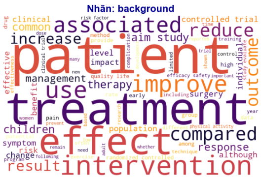
Hình 4: WordCloud nhãn Background.
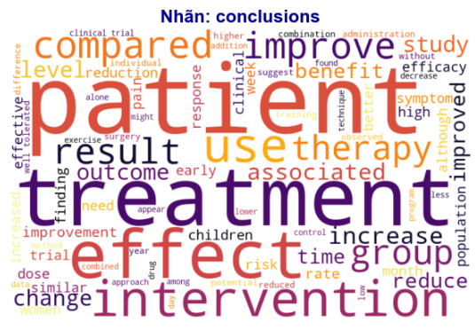
Hình 5: WordCloud nhãn Conclusions.
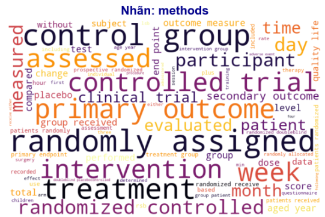
Hình 6: WordCloud nhãn Methods.
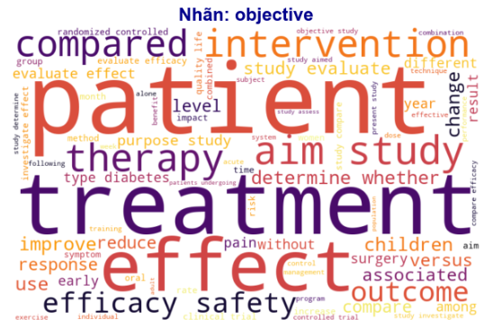
Hình 7: WordCloud nhãn Objective.
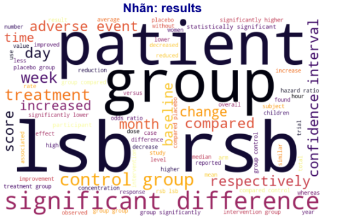
Hình 8: WordCloud nhãn Results.
1.5 Phân bố Độ dài câu & Phân phối Tích lũy (CDF)
Để tối ưu hóa ma trận đầu vào cho mạng Nơ-ron (tránh Padding quá nhiều gây lãng phí RAM, hoặc Truncation làm mất dữ liệu), chúng ta cần khảo sát độ dài trung bình của các câu trong Abstract.
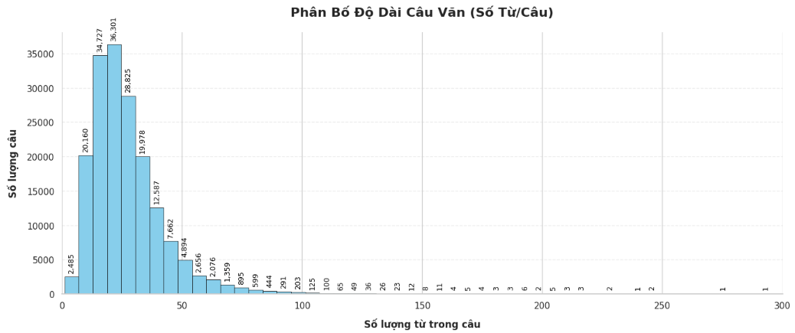
Hình 5: Phân bố độ dài câu (tính bằng số lượng từ). Phân phối có dạng lệch trái (Right-skewed).
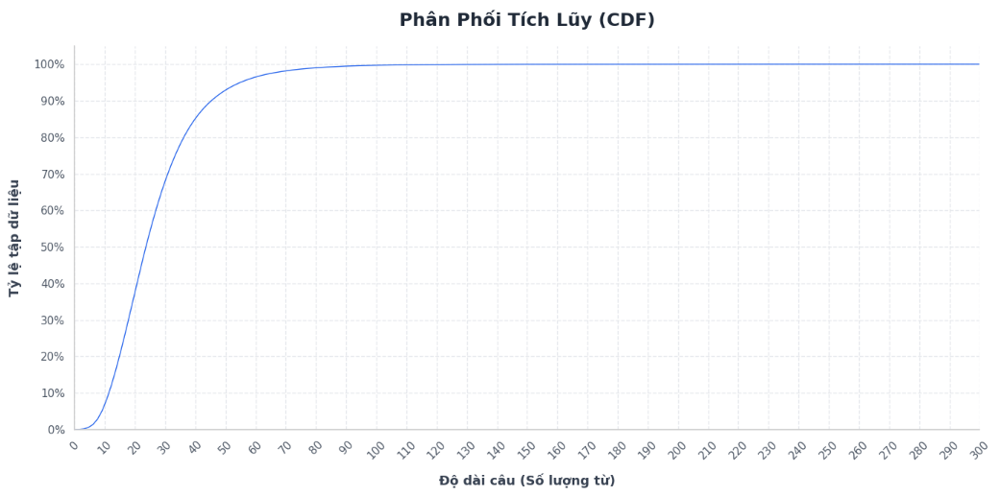
Hình 6: Đường phân phối tích lũy (CDF). Hơn 95% số câu có độ dài dưới 60 từ.
1.6 Kỹ thuật Tiền xử lý văn bản (Text Preprocessing)
Thay vì áp dụng chung một công thức, hệ thống phân nhánh logic tiền xử lý dựa trên đặc thù kiến trúc của từng loại mô hình:
| Bước xử lý | Mục đích |
|---|---|
| Chuẩn hóa ký tự | Chuyển lowercase và loại bỏ dấu câu thừa. Đặc biệt, quy chuẩn ký tự @ thành chữ number (do bộ dữ liệu PubMed gốc che giấu các con số y khoa bằng ký hiệu @, việc chuyển đổi này giúp giữ nguyên ý nghĩa số lượng). |
| Xử lý Stopwords (Phân nhánh theo mô hình) |
Dành cho Bi-LSTM: Loại bỏ hoàn toàn Stopwords bằng NLTK. Giúp giảm nhiễu từ vựng, ép mạng RNN tập trung ghi nhớ các từ khóa y khoa cốt lõi. Dành cho BERT: Giữ nguyên Stopwords. Mô hình Transformer cực kỳ phụ thuộc vào giới từ, liên từ để tính toán trọng số ngữ cảnh (Attention). Nếu xóa sẽ làm phá vỡ ngữ pháp câu. |
| Tokenization | Sử dụng thuật toán băm từ phụ (WordPiece). Đã tinh chỉnh max_length = 128 (thay vì 55) để bù trừ cho sự nở rộng của số lượng token sau khi tách sub-word, đảm bảo không bị mất mát thông tin ở đuôi câu. |
[Bi-LSTM] : total number patients randomized (Đã xóa stopwords và dấu câu)
[BERT] : a total of number patients were randomized (Giữ nguyên cấu trúc ngữ pháp)
1.7 Kết luận phần EDA
- Dữ liệu có 5 nhãn cấu trúc với phân bố không đồng đều
- Objective là lớp thiểu số nghiêm trọng nhất (chỉ khoảng 8%)
- Cần áp dụng Focal Loss để cải thiện Recall cho lớp Objective
- BERT cần giữ stopwords để phục vụ cơ chế Attention
PHẦN 2: CHUẨN BỊ DATASET, DATALOADER VÀ AUGMENTATION
2.1 Pipeline Dữ liệu (HuggingFace Datasets)
Thay vì sử dụng torch.utils.data.Dataset, hệ thống tận dụng sức mạnh của HuggingFace Datasets để tải và xử lý luồng dữ liệu. Dữ liệu được xử lý song song qua hàm .map() và tự động chuyển đổi sang định dạng Tensor bằng lệnh set_format(type="torch"), giúp tối ưu hóa tối đa RAM hệ thống.
2.2 Chiến lược Tokenization (Đồng nhất hóa)
| Kiến trúc | Hệ Tokenizer | Vocab Size | Max Length |
|---|---|---|---|
| BERT | bert-base-uncased (WordPiece) | 30,522 | 128 |
| DistilBERT | distilbert-base-uncased (WordPiece) | 30,522 | 128 |
| Bi-LSTM | bert-base-uncased (WordPiece) | 30,522 | 128 |
Biện luận: Việc ép mô hình Bi-LSTM sử dụng chung bộ Tokenizer của BERT giúp tạo ra môi trường Baseline công bằng tuyệt đối. Mọi chênh lệch về hiệu năng (Accuracy/F1) giữa các case study sẽ phản ánh đúng 100% sức mạnh cấu trúc của mạng Nơ-ron.
2.3 Data Augmentation (Làm giàu dữ liệu)
Áp dụng kỹ thuật Random Word Deletion: Xóa ngẫu nhiên đúng 1 từ trong các câu huấn luyện có độ dài lớn hơn 5 từ.
Mục đích: Kỹ thuật này hoạt động như một cơ chế Regularization tự nhiên, ép mô hình (đặc biệt là Transformer) không được quá phụ thuộc vào một từ khóa duy nhất để dự đoán nhãn, qua đó tăng tính bền bỉ trên tập Test.
2.4 Xử lý Mất cân bằng (Class Weights)
Hệ thống tích hợp compute_class_weight('balanced', ...) từ thư viện Scikit-Learn. Thuật toán tự động cấp trọng số phạt tỷ lệ nghịch với số lượng mẫu. Kết quả: Lớp Objective nhận được trọng số cao nhất (gấp khoảng 3.4 lần lớp Methods) để ép mô hình phải chú ý học các đặc trưng hiếm.
2.5 DataLoader Configuration
- Batch size: 32
- Padding Strategy: Bù 0 cho các câu ngắn hơn max length
- Truncation: Cắt bỏ triệt để phần dư thừa vượt quá 128 tokens
- Tích hợp: Các tham số này được quản lý tự động, chặt chẽ thông qua
HuggingFace TrainerAPI (thay cho vòng lặp train thủ công).
PHẦN 3: XÂY DỰNG, HUẤN LUYỆN VÀ ĐÁNH GIÁ MÔ HÌNH
3.1 Kiến trúc mô hình
| Mô hình | Phân loại | Params | Cấu trúc kỹ thuật |
|---|---|---|---|
| Bi-LSTM | RNN | ~4.0M | Embedding (128) + 1 Layer Bi-LSTM (Hidden 32) + Attention Mask Pooling + Dropout (0.5) + Linear Classifier |
| BERT | Transformer | 110M | bert-base-uncased, 12 Attention Layers, 768 Hidden Size |
| DistilBERT | Transformer nhẹ | 66M | distilbert-base-uncased, 6 Attention Layers (Giữ lại 97% sức mạnh BERT nhưng nhanh hơn 60%) |
3.2 Cấu hình Huấn luyện (Trainer API)
- Learning Rate:
2e-5cho Transformer và1e-3cho Bi-LSTM. - Tối ưu hóa phần cứng: Kích hoạt tính toán độ chính xác kép (Mixed Precision -
fp16=True) giúp tăng tốc độ train trên GPU NVIDIA. - Epochs & Chống Overfitting: Giới hạn
epochs = 5cho mọi case study. Tích hợpEarlyStoppingCallback(Dừng sớm nếu Macro F1 không cải thiện sau 2 epochs liên tiếp). - Weight Decay: Thiết lập
0.01để chuẩn hóa trọng số mạng lưới.
3.3 Chiến lược Loss Function
| case study | Hàm mất mát | Bản chất kỹ thuật |
|---|---|---|
| Standard | Cross Entropy (CE) | Hàm mặc định của PyTorch. Tính toán độ lỗi dựa trên phân bố tự nhiên. Dễ bị thiên vị về phía lớp đa số (Methods, Results). |
| Focal Loss | Focal Loss + Class Weights | Hàm tùy chỉnh. Tích hợp tham số gamma=2.0 để giảm sự chú ý vào các mẫu dễ đoán, kết hợp với bộ trọng số tỷ lệ nghịch (từ Scikit-Learn) để "ép" mạng nơ-ron phải học kỹ lớp thiểu số (Objective). |
3.4 Ma trận Đánh giá Đa chiều (Comprehensive Evaluation)
Hệ thống không chỉ đánh giá qua con số Accuracy đơn thuần, mà cung cấp một góc nhìn 360 độ về vòng đời mô hình:
- Metrics: Accuracy, Macro F1-Score, Precision, Recall và Confusion Matrix để soi lỗi phân loại chéo giữa các nhãn.
- Error Analysis: Trích xuất tự động danh sách các câu dự đoán sai có mức độ tự tin cao nhất ra file CSV để chuyên gia phân tích ngữ nghĩa.
- Explainable AI: Kết hợp
LIMEvàCaptum Integrated Gradientsđể giải thích từ khóa nào quyết định nhãn y khoa. - Efficiency Trade-off: Đo đạc dung lượng Model và thời gian suy luận để đánh giá tính khả thi khi triển khai thực tế.
PHẦN 4: KẾT QUẢ TỔNG HỢP VÀ SO SÁNH
4.1 Đánh giá Đánh đổi Hiệu quả (Efficiency Trade-off)
So sánh tương quan giữa tốc độ suy luận, kích thước mô hình và độ chính xác. DistilBERT cho thấy sự cân bằng tốt nhất cho môi trường Production.

4.2 Biểu đồ So sánh Hiệu năng (Accuracy & F1-Score)

4.3 Kết luận Tổng thể
- BERT_Full đạt hiệu năng cao nhất nhờ kiến trúc Transformer và Fine-tune toàn bộ trọng số.
- Focal Loss hoàn thành nhiệm vụ vá lớp thiểu số (Objective), thể hiện rõ qua sự tăng trưởng của chỉ số Macro F1.
- Freeze có kết quả kém
PHẦN 5: CHI TIẾT CASE STUDIES
Phân tích 6 góc độ xuất ra từ hệ thống cho 2 mô hình chính.
CASE: BERT_Full Best Performance
1. Lịch sử Huấn luyện
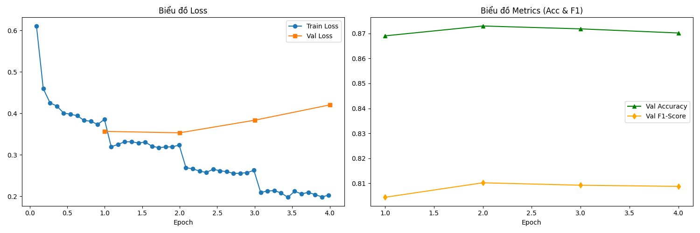
2. Ma trận Nhầm lẫn
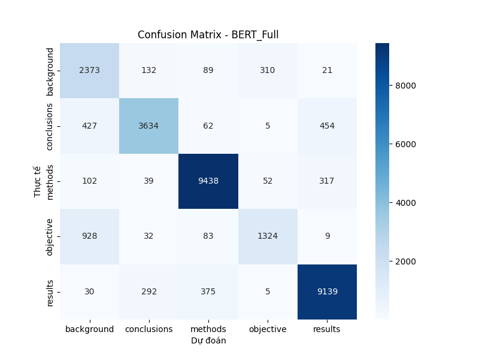
3.LIME
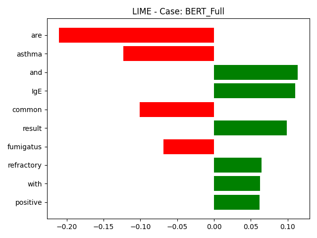
4. Phân tích lỗi (Top 5 Confident Errors)
Các câu bị mô hình phân loại sai nhưng lại có độ tự tin (Confidence) cực kỳ cao.
| Văn bản nội dung (Text) | Nhãn Thực tế | Dự đoán Sai | Confidence |
|---|---|---|---|
| "Carvedilol significantly reduced HVPG from @ mm Hg ( SD , @ ) to @ mm Hg ( SD , @ ) after @ minutes and to @ mm Hg ( SD , @ ) after @ days ( P < @ ) ." | METHODS | RESULTS | 0.9967 |
| "Nebivolol reduced HVPG from @ mm Hg ( SD , @ ) to @ mm Hg ( SD , @ ) and @ mm Hg ( SD , @ ) , respectively ( P < @ ) ." | METHODS | RESULTS | 0.9967 |
| "Compared with OP , PKEP was associated with less perioperative hemoglobin decrease , shorter catheterization time... ( p = @ ) ." | CONCLUSIONS | RESULTS | 0.9966 |
| "VO@ pic increased after AT ( @ @ vs @ @ mL O@/min/kg , P < @ ) and remained unchanged after CT ( @ @ vs @ @ , P = NS ) ." | METHODS | RESULTS | 0.9965 |
| "Additionally , AST resulted in significantly fewer vessel-to-air exposure events ( P < @ ) and unprotected sharps exposures ( P < @ ) ." | CONCLUSIONS | RESULTS | 0.9964 |
5. Báo cáo Phân loại (Classification Report)
Đánh giá chi tiết hiệu năng của mô hình trên từng nhãn y khoa (Tập Validation).
| Nhãn | Precision | Recall | F1-Score | Số lượng |
|---|---|---|---|---|
| BACKGROUND | 61.48% | 81.13% | 69.95% | 2,925 |
| CONCLUSIONS | 88.01% | 79.31% | 83.43% | 4,582 |
| METHODS | 93.94% | 94.87% | 94.40% | 9,948 |
| OBJECTIVE | 78.07% | 55.72% | 65.03% | 2,376 |
| RESULTS | 91.94% | 92.87% | 92.40% | 9,841 |
| Accuracy | - | - | 87.31% | 29,672 |
| Macro Avg | 82.69% | 80.78% | 81.04% | 29,672 |
| Weighted Avg | 87.89% | 87.31% | 87.28% | 29,672 |
6. Captum Integrated Gradients
Trực quan hóa giá trị phân bổ đặc trưng (Attribution Scores) bằng cách truy vết dòng gradient từ logit dự đoán [Background] ngược về không gian Embedding. Màu xanh lá biểu thị các token có đóng góp tích cực (tăng xác suất dự đoán), trong khi màu đỏ biểu thị các token có tác động tiêu cực (suy giảm độ tự tin của mô hình).
| True Label | Predicted Label | Attribution Label | Attribution Score | Word Importance |
|---|---|---|---|---|
| [CLS] i ##ge sen ##sit ##ization to as ##per ##gill ##us fu ##mi ##gat ##us and a positive sp ##ut ##um fungal culture result are common in patients with ref ##rac ##tory asthma . [SEP] | ||||
CASE: Bi-LSTM_Full RNN Baseline
1. Lịch sử Huấn luyện
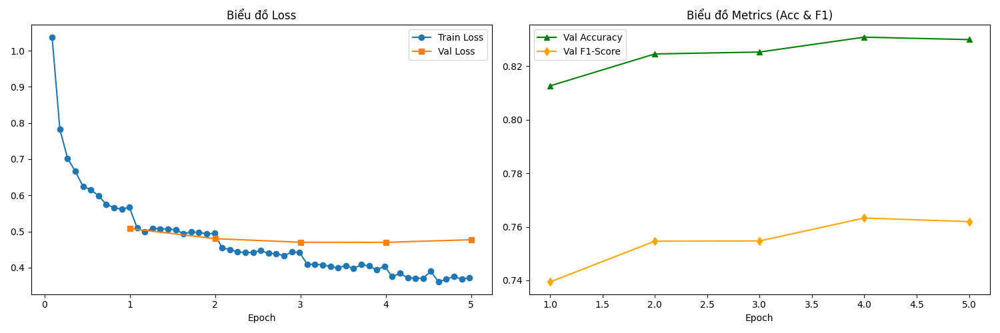
2. Confusion Matrix
3. LIME Explanation
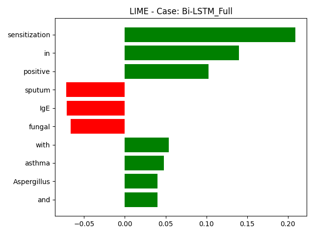
4. Phân tích lỗi (Top Confident Errors)
Các câu bị mô hình phân loại sai nhưng lại có độ tự tin (Confidence) cực kỳ cao.
| Văn bản nội dung (Text) | Nhãn Thực tế | Dự đoán Sai | Confidence |
|---|---|---|---|
| "Thromboses were more commonly incident ( n = @ -LSB- @ % -RSB- ) than prevalent ( n = @ -LSB- @ % -RSB- ) ( P < @ ) and more often deep ( n = @ -LSB- @ % -RSB- ) than superficial..." | METHODS | RESULTS | 0.9998 |
| "On intention-to-treat analysis , both the PKEP and OP groups had equivalent Qmax ( @ ml/s vs @ ml/s , respectively ; p = @ ) , International Prostate Symptom Score..." | CONCLUSIONS | RESULTS | 0.9998 |
| "Compared with OP , PKEP was associated with less perioperative hemoglobin decrease , shorter catheterization time , and shorter postoperative hospital stay..." | CONCLUSIONS | RESULTS | 0.9997 |
| "RIPC-induced protection was reflected by decreased serum troponin I concentration area under the curve ( @ versus @ ng/ml @ h , p = @ ) ." | METHODS | RESULTS | 0.9997 |
5. Báo cáo Phân loại (Classification Report)
Đánh giá chi tiết hiệu năng của mô hình trên từng nhãn y khoa (Tập Validation).
| Nhãn | Precision | Recall | F1-Score | Số lượng |
|---|---|---|---|---|
| BACKGROUND | 59.40% | 65.44% | 62.27% | 2,925 |
| CONCLUSIONS | 75.45% | 76.95% | 76.20% | 4,582 |
| METHODS | 89.46% | 92.73% | 91.07% | 9,948 |
| OBJECTIVE | 73.94% | 55.30% | 63.28% | 2,376 |
| RESULTS | 89.52% | 88.13% | 88.82% | 9,841 |
| Accuracy | - | - | 83.08% | 29,672 |
| Macro Avg | 77.56% | 75.71% | 76.33% | 29,672 |
| Weighted Avg | 83.11% | 83.08% | 82.96% | 29,672 |
6. Captum Integrated Gradients
Trực quan hóa giá trị phân bổ đặc trưng (Attribution Scores) bằng cách truy vết dòng gradient từ logit dự đoán ngược về không gian Embedding. Màu xanh lá biểu thị các token có đóng góp tích cực (tăng xác suất dự đoán), trong khi màu đỏ biểu thị các token có tác động tiêu cực (suy giảm độ tự tin của mô hình).
| True Label | Predicted Label | Attribution Label | Attribution Score | Word Importance |
|---|---|---|---|---|
| [CLS] i ##ge sen ##sit ##ization to as ##per ##gill ##us fu ##mi ##gat ##us and a positive sp ##ut ##um fungal culture result are common in patients with ref ##rac ##tory asthma . [SEP] | ||||
PHẦN 6: CÁC KỊCH BẢN THỬ NGHIỆM KHÁC (ABLATION STUDIES)
Lưu trữ biểu đồ và báo cáo của 6 cấu hình thử nghiệm mở rộng (Focal Loss, Augmentation, Freeze, DistilBERT) dùng làm cơ sở đối chiếu.
CASE: BERT_Freeze Đóng băng Backbone
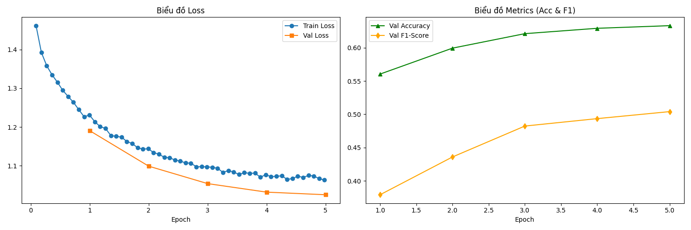
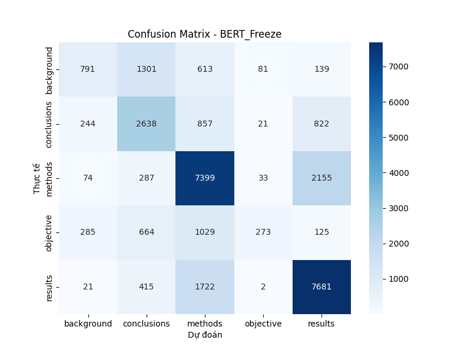
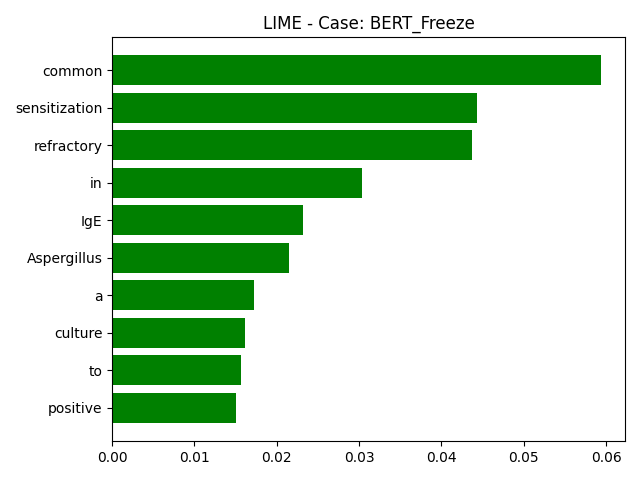
CASE: BERT_Full_Focal Xử lý mất cân bằng
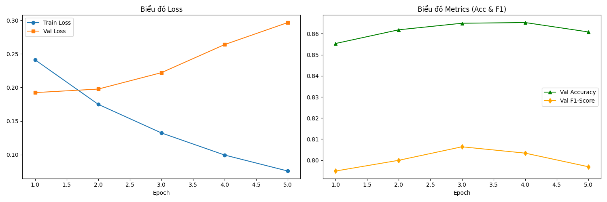
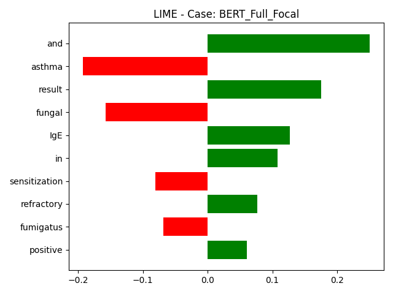
CASE: Bi-LSTM_Focal
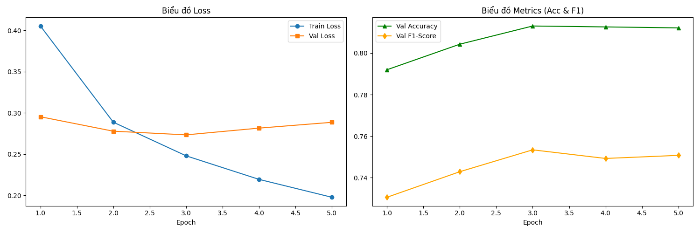
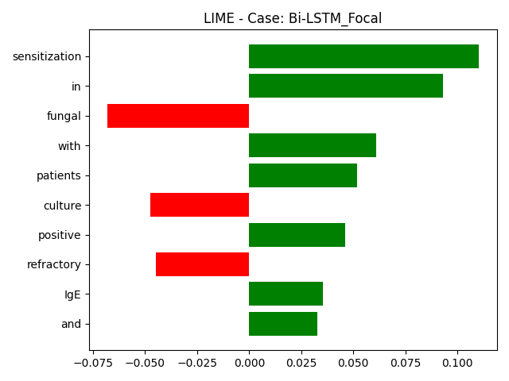
CASE: BERT_Augmented Làm giàu dữ liệu
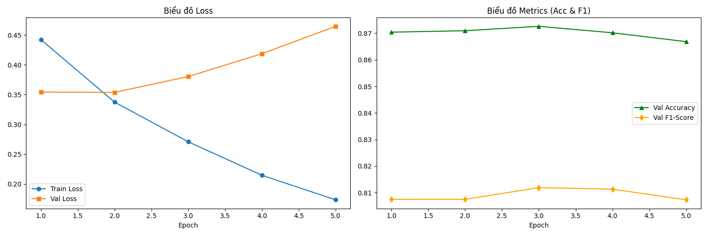
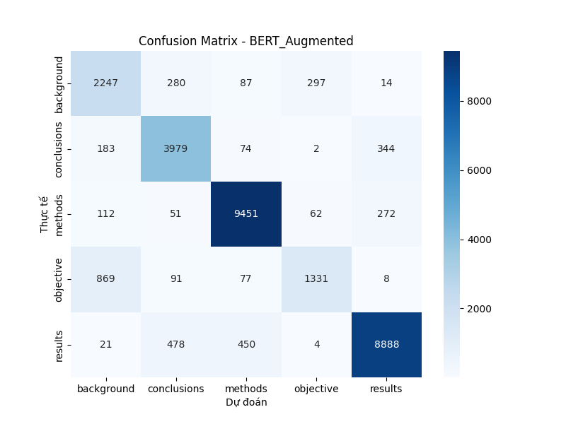
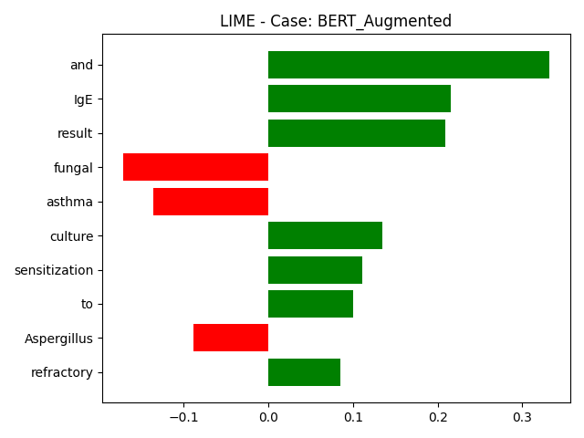
CASE: Bi-LSTM_Augmented
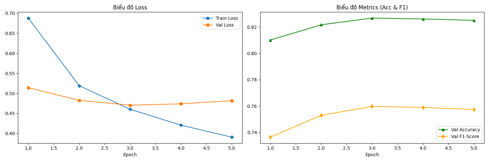
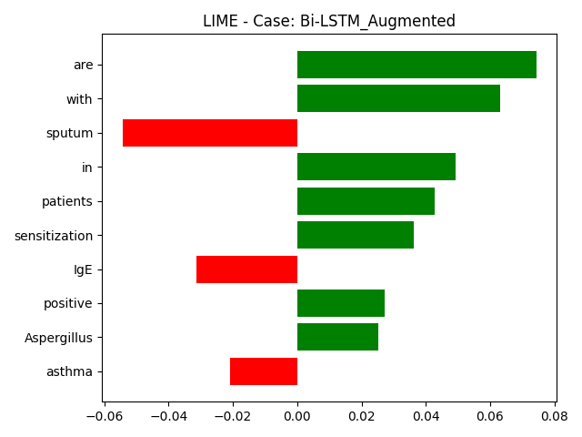
CASE: DistilBERT_Small Mô hình tối ưu tốc độ
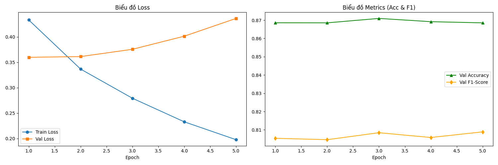
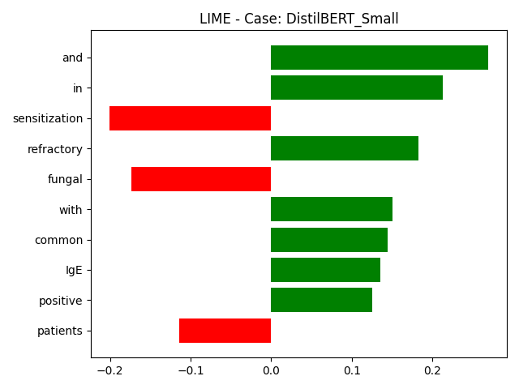